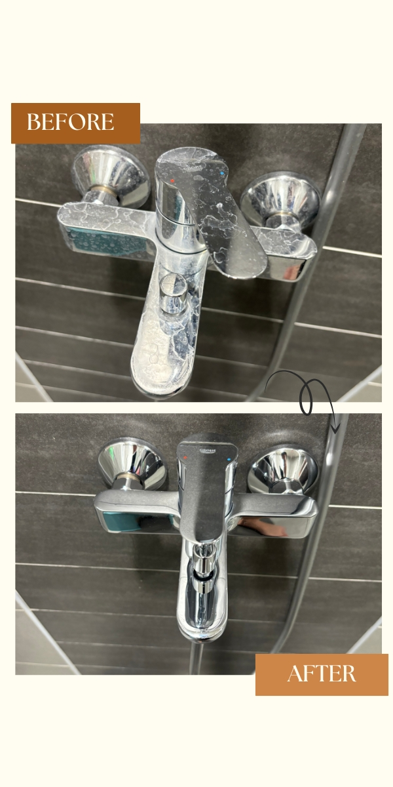
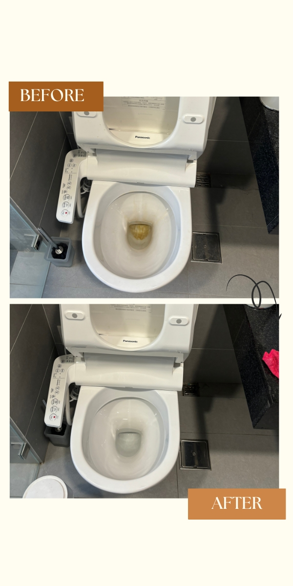
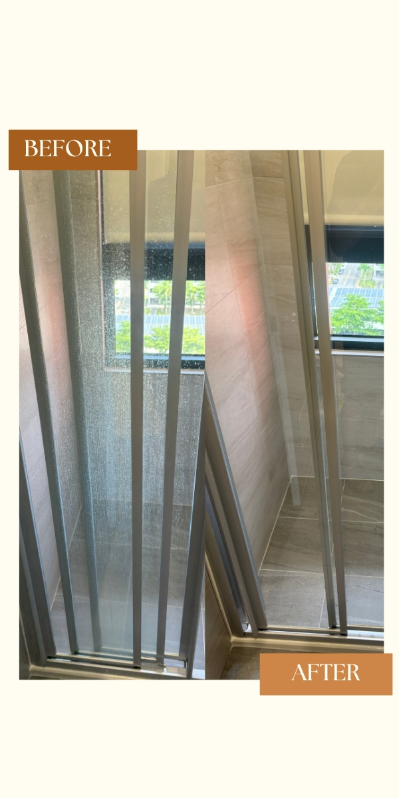
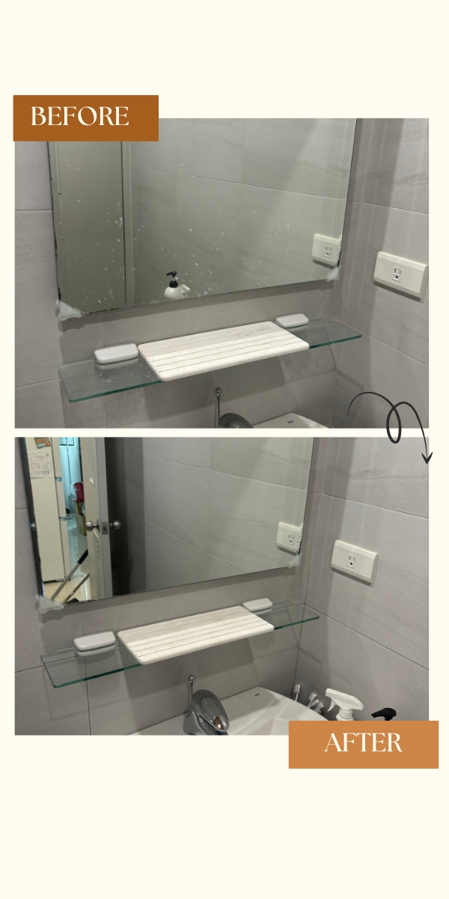
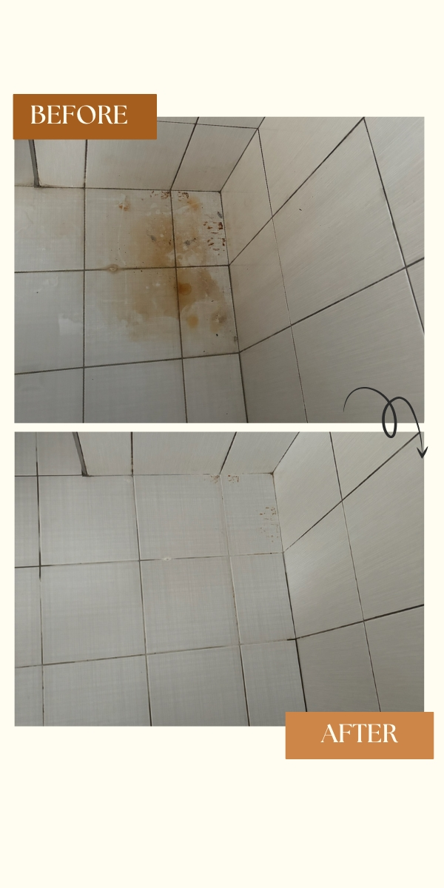
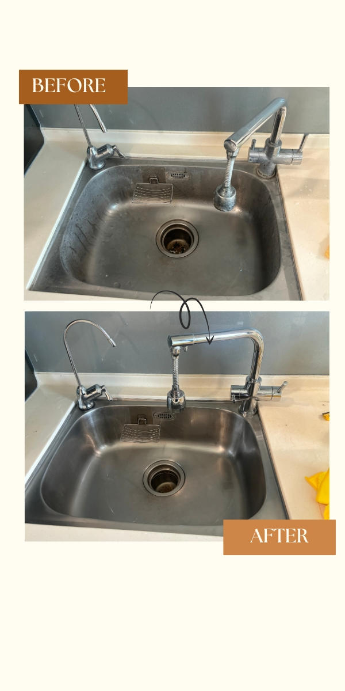
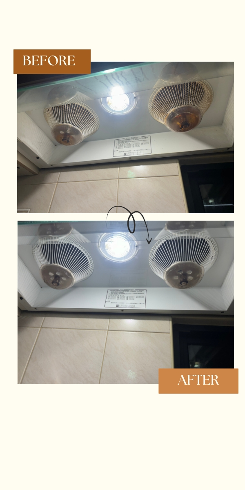
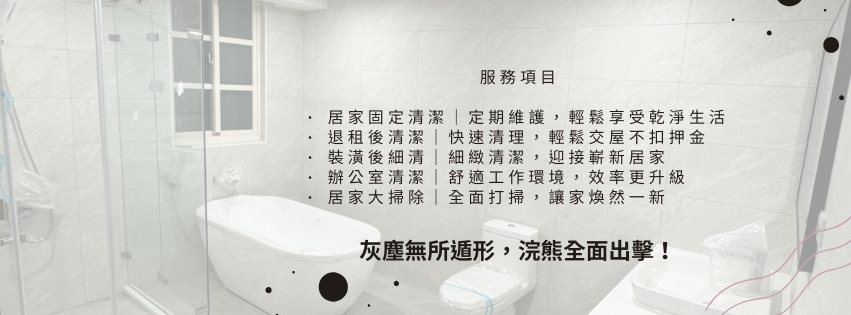

清潔前後對比
看看我們的清潔魔法前後差異！
浴室清潔





.jpg)
.jpg)
.jpg)
廚房油垢


我們提供台南專業、誠信、安全的清潔服務。
服務據點大台南地區

🔸 事前會與您確認重點清潔區域
🔸 4 小時內盡量涵蓋範圍，敬請見諒
可選時段：
✔️ 早上 8:30–12:30
✔️ 下午 2:00–6:00
可彈性調整，請先洽詢！
預約提醒：
服務前需支付 30% 訂金作為保留時段保障。
注意事項：
場勘後將以當下確認內容及報價為準，如需更動請務必提前告知。
小浣熊居家清潔是一支來自台南的專業清潔團隊，致力於為每一個家庭與空間帶來煥然一新的感受。我們以誠信、細心和效率為服務核心，提供從日常清掃到裝潢後細清的多樣化清潔服務。
品牌名稱的靈感來自可愛又愛乾淨的小浣熊——牠總是喜歡用小手手仔細洗東西，就像我們對待每一位客戶的空間一樣，用最認真、最細膩的態度，完成每一次清潔任務。
我們了解每一位客戶對家的期待，因此不僅注重清潔成果，更重視溝通與細節。我們的清潔人員皆經過培訓，使用安心清潔用品，並提供客製化清潔方案，讓每一次服務都安心又放心。
選擇小浣熊，不只是選擇乾淨，而是選擇一種對生活品質的堅持。
電話: 0921-702-599 劉先生
聯絡時間: 周一到周日 08:30-20:00
看看我們的清潔魔法前後差異！







我們提供以下清潔服務：
• 居家日常清潔
• 租屋退租清潔
• 裝潢後細清
• 辦公室清潔
• 居家大掃除
居家清潔方案1人4小時 $1900
大掃除方案:
我們提供 專人到現場免費場勘，並根據以下標準進行報價：
• 房屋的大小（坪數或房間數）
• 清掃難易度（如油污頑垢、重點區域的深度清潔等）
• 清潔所需人力（根據範圍與複雜度安排適當人手）
為了讓我們提供更準確的報價，請盡量詳細說明您的需求！
例如：房間數量、清潔重點、是否有特定要求等。我們會根據您的情況提供專屬報價和安排。
為保護您的財物及人員安全，清潔範圍中不包含以下項目：
• 不開櫃擦拭、門窗清潔
• 大型物品移動（如冰箱、洗衣機等）
若有額外需求，請提前與我們溝通，我們會視情況提供建議。
不用擔心，我們的清潔團隊會攜帶專業清潔工具與清潔劑，您不需要準備任何物品！
如果您有特別需求（例如使用自備清潔劑或特定品牌），請提前告知我們，我們將妥善安排。
我們的工作時間為：
• 星期一至星期日：上午 8:30 - 傍晚 6:00
我們提供兩個清潔時段供您選擇：
• 上午 8:30
• 下午 2:00
如需調整時間，可與我們溝通協調！
為了確保您能預約到理想的時段，我們建議您 至少提前兩到三個禮拜 預約！
越靠近需要服務的日期，時段可能會已滿，建議盡早安排！
如果臨時需要服務，我們會盡力協調，但無法保證一定有空檔哦。
• 居家清潔方案 取消或更改預約：請至少提前 24 小時 通知，否則可能會收取一定的手續費 $500。
• 大掃除服務 須提前收取 30% 訂金 以確保預約。
若需更改預約時間：最晚請於 3 週前通知，可免費調整。
• 2 週前更改時間，將扣除訂金 10% 作為調整費用。
• 1 週前更改時間，將扣除訂金 20% 作為調整費用。
• 1 週內取消或更改，訂金將不予退還，敬請見諒。
您可以提出需求，我們將盡力安排您指定的清潔人員，但可能會因排班狀況有所調整，敬請見諒！
根據您的生活習慣與需求，我們建議以下清潔頻率：
• 每週清潔一次：
適合對居家環境要求高的家庭，讓家裡隨時保持乾淨整潔。
• 每兩週清潔一次：
適合工作忙碌、日常清潔時間有限的家庭，維持居家基礎整潔。
• 每月清潔一次：
適合居住人口少、作息簡單的家庭，或針對廚房、浴室等特定區域定期清潔的需求。
我們也可以依您的需求，靈活安排清潔頻率，讓您住得更舒適！
不一定！但我們建議您 第一次合作時最好在家，這樣可以清楚告知清潔人員您的生活習慣、物品擺放位置，以及清潔範圍與時間。
清潔開始後，您可以選擇外出，完成後我們會致電通知您進行驗收。
我們的居家清潔服務範圍是靈活可調的。為了確保您滿意首次清潔體驗，我們建議首次清潔時範圍選擇精簡一些。這樣如果還有剩餘時間，清潔人員可以與您討論並確定需要額外清潔的區域。
我們期待為您提供優質、貼心的服務，讓您的居家環境煥然一新！